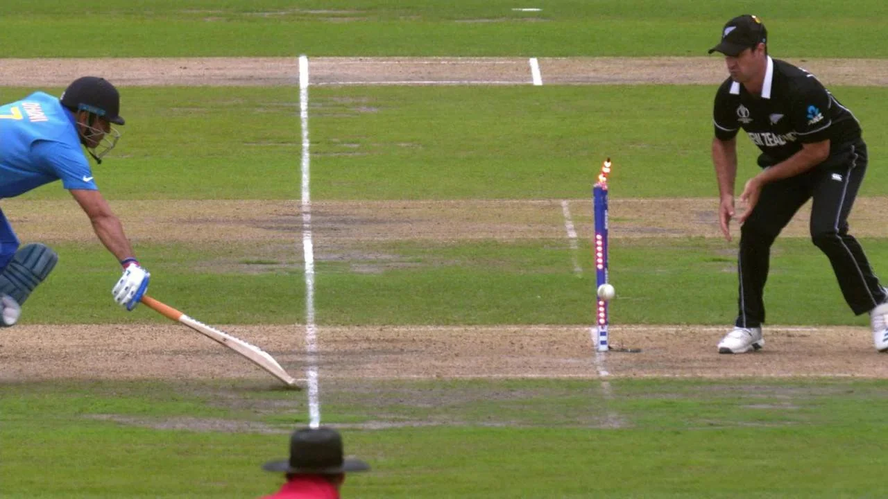

Mahendra Singh Dhoni
Role: Wicketkeeper-Batsman
Bio: One of the most successful captains in cricket history, Dhoni led India to numerous victories, including the 2007 T20 and 2011 ODI World Cups.
Career Stats
| Format | Matches | Innings | Not Outs | Runs | High Score | Average | Balls Faced | Strike Rate | 100s | 50s | Fours | Sixes |
|---|---|---|---|---|---|---|---|---|---|---|---|---|
| Test | 90 | 144 | 38 | 4876 | 224 | 38.1 | 9295 | 59.0 | 6 | 33 | 494 | 220 |
| ODI | 350 | 297 | 108 | 10773 | 183* | 50.6 | 10429 | 87.6 | 10 | 73 | 829 | 229 |
| T20I | 98 | 84 | 33 | 1617 | 56* | 37.9 | 1184 | 126.1 | 0 | 2 | 92 | 36 |
Memorable Moments
Dhoni's iconic six to win the 2011 World Cup is one of cricket's most memorable moments.
Under his captaincy, India became the number one Test team in 2009 and won multiple ICC trophies.